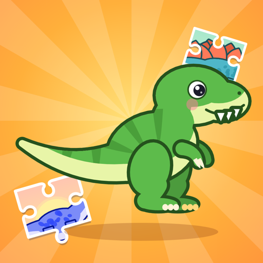

Dino Puzzle Pals is a gentle first jigsaw game for children aged 2 to 5 who love dinosaurs: 192 dinosaur puzzles in 8 worlds with big, chunky pieces, a happy dance and balloons after every puzzle, and no adverts.
Free to try on iPhone, iPad and Android. One optional purchase unlocks the full game. No adverts, no tracking, works without internet.
Need help with the game or the purchase, or have an idea? We would love to hear from you.
Email: support@techhigh.co.uk
I bought the full game but the puzzles are locked again. Tap the gear button, answer the question for grown-ups, then tap Restore Purchase. It costs nothing.
Is it a subscription? No. It is a single payment that unlocks all 192 puzzles forever.
Are there adverts? No, not in the free part and not in the full game.
The dinosaur names are not spoken. The game uses the voice built into your phone or tablet. Check that Voice is on in the parents' area and that the device volume is up. On some Android devices you may need to install a text-to-speech voice in the system settings.
How do I delete my data? The game keeps stars and settings only on your device. Removing the game deletes them.
See also the privacy policy.
Published by TechHigh, United Kingdom.